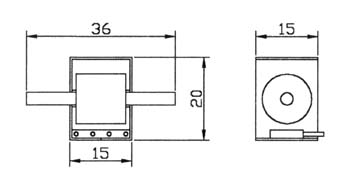
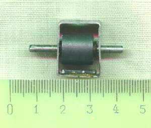
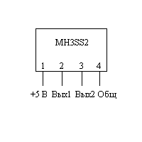
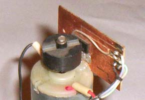
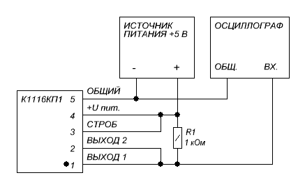
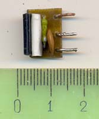
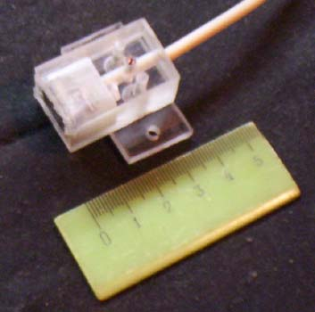
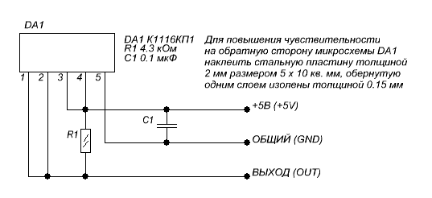
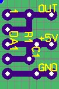
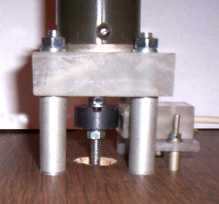

Датчик частоты вращения (счетчик числа оборотов) на постоянном магните и магнитоуправляемой микросхеме
Назначение
Датчик частоты (или периода) вращения (счетчик числа оборотов) является первичным преобразователем и может применяться в схемах измерения частоты вращения или периода одного оборота вала, счетчика числа оборотов (только суммирование независимо от направления вращения, скорость вращения сколь угодно малая), а также в качестве датчика положения вала в пределах полуоборота.
1. Датчик частоты вращения. Вариант 1
Конструкция датчика (вариант 1)
Сборочный чертеж датчика частоты вращения показан на рис. 1.1, а внешний вид - на рис. 1.2.

Рис. 1.1. Сборочный чертеж датчика частоты вращения (вариант 1).

Рис. 1.2. Датчик частоты вращения (вариант 1, вид сбоку).
Датчик состоит из стального (оцинкованное железо) корпуса с отверстиями, в которые пропущен вал с цилиндрическим постоянным магнитом (для удешевления конструкции подшипники не применялись). В корпусе имеются два дополнительных крепежных отверстия для установки датчика. Корпус одновременно служит магнитопроводом и магнитным экраном. Материал магнита: изотропный феррит бария; размеры магнита: диаметр 11.5 мм, высота 11 мм, отверстие квадратного сечения 3 х 3 мм2; направление намагниченности магнита: по диаметру, намагничивание осуществлялось установке импульсного намагничивания [2] с намагничивающим устройством [3]. Под магнитом установлена магнитоуправляемая микросхема MH3SS2. Выход микросхемы - триггерная защелка, поэтому ложные сигналы при переключении отсутствуют.
Характеристики датчика (вариант 1):
Подключение датчика частоты вращения (вариант 1)
В качестве выводов датчика используются выводы магнитоуправляемой микросхемы MH3SS2 (назначение см. рис. 1.3). Корпус датчика может быть подключен к общему проводу (заземлен).

Рис. 1.3. Назначение выводов микросхемы MH3SS2.
2. Датчик частоты вращения. Вариант 2
Конструкция датчика (вариант 2)
Датчик представляет из себя цилиндрический постоянный магнит с центральным осевым отверстием и печатную плату с магнитоуправляемой микросхемой К1116КП1. Материал магнита: изотропный феррит бария, размеры: внешний диаметр 22 мм, диаметр отверстия 6 мм, высота 10 мм. Магнит намагничен по диаметру в установке импульсного намагничивания [2]. Постоянный магнит одевается на вал вращения, а печатная плата с магнитоуправляемой микросхемой крепится таким образом, чтобы магнитные полюса постоянного магнита проходили при вращении по возможности как можно ближе к зоне чувствительности микросхемы (рис. 2.1). На выходе микросхемы имеется триггер Шмидта, предотвращающий помехи при переключении.

Рис. 2.1. Внешний вид датчика частоты вращения (вариант 2), закрепленного на электродвигателе.
Характеристики датчика (вариант 2):
Подключение датчика частоты вращения (вариант 2)
На рис. 2.2 показано назначение выводов микросхемы К1116 КП1 и возможная схема ее подключения.

Рис. 2.2. Назначение и подключение выводов микросхемы К1116КП1.
3. Датчик частоты вращения. Вариант 3
Конструкция датчика (вариант 3)
Конструкция и электрическая принципиальная схема датчика аналогичны второму варианту (п. 2). Магнитоуправляемая микросхема К1116КП1 устанавливается на печатной плате (рис. 3.1). На обратную сторону микросхемы наклеена заизолированная стальная пластина, выполняющая функцию концентратора магнитного потока и позволяющая повысить чувствительность датчика и увеличить расстояние между микросхемой и источником магнитного поля - постоянным магнитом, укрепленном на вращающемся валу. Печатная плата датчика устанавливается в корпусе с крепежной планкой (рис. 3.2). Постоянный магнит цилиндрической формы с центральным отверстием по диаметру вращающегося вала изготовлен из изотропного феррита бария и намагничен диаметрально в установке импульсного намагничивания [2]. Диаметр используемого магнита 22 мм, диаметр отверстия под вал 6 мм, высота 6 мм. Могут быть использованы и другие типоразмеры и марки постоянных магнитов [1]. Постоянный магнит одевается на вал вращения, а корпус датчика крепится таким образом, чтобы магнитные полюса постоянного магнита проходили при вращении по возможности как можно ближе к зоне чувствительности микросхемы.

Рис. 3.1. Внешний вид печатной платы датчика частоты вращения (вариант 3) с магнитоуправляемой микросхемой и концентратором магнитного потока.

Рис. 3.2. Датчик частоты вращения (вариант 3) в корпусе.
Характеристики датчика (вариант 3):
Электрическая принципиальная схема датчика частоты вращения (вариант 3)
На рис. 3.3 показана электрическая принципиальная схема датчика. Выход магнитоуправляемой микросхемы К1116КП1 с открытым коллектором подключен к шине питания +5 В через резистор R1. На выходе микросхемы имеется триггер Шмидта, предотвращающий помехи при переключении. На обратную сторону микросхемы наклеена стальная пластина - концентратор магнитного потока, которая позволяет повысить чувствительность датчика и увеличить расстояние между микросхемой и магнитом. В цепи питания для фильтрации импульсных помех включен конденсатор C1. Эскиз печатной платы датчика приведен на рис. 3.4. На рис. 3.5 показана установка датчика на электропривод с вращающимся валом. Постоянный магнит крепится на валу, датчик устанавливается таким образом, чтобы между торцом датчика, где находится магнитоуправляемая микросхема, и постоянным магнитом был зазор 1 ... 2 мм. Кабель датчика подключается к источнику питания и прибору для измерения периода или частоты, например, осциллографу.

Рис. 3.3. Схема электрическая принципиальная датчика частоты вращения (вариант 3).

Рис. 3.4. Эскиз печатной платы датчика частоты вращения (вариант 3). Размер платы 10 х 15 мм2.

Рис. 3.5. Вариант использования датчика частоты вращения (вариант 3) для измерения периода вращения вала электропривода.
Имеющиеся датчики частоты (периода) вращения (или числа оборотов) используются в исследовательских целях. При необходимости могут быть разработаны и другие варианты подобных датчиков.
Ссылки:
24.11.2005
16.06.2010
27.10.2018
08.12.2018
Альтернативные источники
энергии
Компьютеры и
Интернет
Магнитные поля
Механотронные системы
Перспективные
разработки
Электроника и
технология